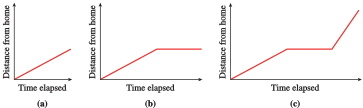
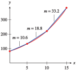
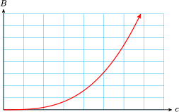
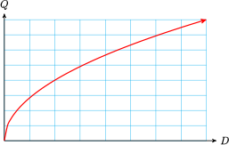
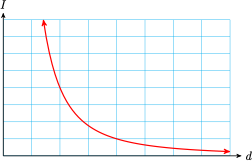
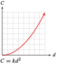

Section 5.6 Functions as Models
Subsection The Shape of the Graph
To create a good model we first decide what kind of function to use. What sort of function has the right shape to describe the process we want to model? Should it be increasing or decreasing, or some combination of both? Is the slope constant or is it changing?
In Examples 5.79 and 5.81, we investigate how the shape of a graph illustrates the nature of the process it models.
Example 5.79.
Forrest leaves his house to go to school. For each of the following situations, sketch a possible graph of Forrest's distance from home as a function of time.
Forrest walks at a constant speed until he reaches the bus stop.
Forrest walks at a constant speed until he reaches the bus stop; then he waits there until the bus arrives.
Forrest walks at a constant speed until he reaches the bus stop, waits there until the bus arrives, and then the bus drives him to school at a constant speed.
-
The graph is a straight-line segment, as shown in figure (a). It begins at the origin because at the instant Forrest leaves the house, his distance from home is 0. (In other words, when \(t = 0, y = 0\text{.}\)) The graph is a straight line because Forrest has a constant speed. The slope of the line is equal to Forrest’s walking speed.
 The first part of the graph is the same as part (a). But while Forrest waits for the bus, his distance from home remains constant, so the graph at that time is a horizontal line, as shown in figure (b). The line has slope \(0\) because while Forrest is waiting for the bus, his speed is \(0\text{.}\)
The graph begins like the graph in part (b). The last section of the graph represents the bus ride. It has a constant slope because the bus is moving at a constant speed. Because the bus (probably) moves faster than Forrest walks, the slope of this segment is greater than the slope for the walking section. The graph is shown in figure (c).
Checkpoint 5.80. Practice 1.

The graphs in Example 5.79 are portions of straight lines. We can also consider graphs that bend upward or downward. The bend is called the concavity of the graph.
Example 5.81.
The two functions described in this example are both increasing functions, but they increase in different ways. Match each function to its graph and to the appropriate table of values.
The number of flu cases reported at an urban medical center during an epidemic is an increasing function of time, and it is growing at a faster and faster rate.
The temperature of a potato placed in a hot oven increases rapidly at first, then more slowly as it approaches the temperature of the oven.
\((1)\)
| \(x\) | \(0\) | \(2\) | \(5\) | \(10\) | \(15\) |
| \(y\) | \(70\) | \(89\) | \(123\) | \(217\) | \(383\) |
\((2)\)
| \(x\) | \(0\) | \(2\) | \(5\) | \(10\) | \(15\) |
| \(y\) | \(70\) | \(219\) | \(341\) | \(419\) | \(441\) |

-
The number of flu cases is described by graph(A) and table (1). The function values in table (1) increase at an increasing rate. We can see this by computing the rate of change over successive time intervals.
\begin{gather*} x = 0 \text{ to } x = 5: ~~~~~~~~m = \frac{\Delta y}{\Delta x}=\frac{123-70}{5-0} = 10.6\\ \\ x = 5\text{ to } x = 10:~~~~~~~~ m = \frac{\Delta y}{\Delta x}=\frac{217-123}{10-5} = 18.8\\ \\ x = 10 \text{ to } x = 15:~~~~~~~~m = \frac{\Delta y}{\Delta x} =\frac{383 - 217}{15 - 10} = 33.2 \end{gather*}The increasing rates can be seen inthe figure below; the graph bends upward as the slopes increase.
 -
The temperature of the potato is described by graph(B) and table (2). The function values in table (2) increase, but at a decreasing rate.
\begin{gather*} x = 0\text { to } x = 5:~~~~~~~~m =\frac{\Delta y}{\Delta x}=\frac{341-70}{5 - 0}= 54.2\\ \\ x = 5 \text{ to } x = 10:~~~~~~~~m =\frac{\Delta y}{\Delta x}=\frac{419 - 341}{10 - 5}= 15.6\\ \\ x = 10 \text{ to } x = 15:~~~~~~~~m =\frac{\Delta y}{\Delta x}=\frac{441 - 419}{15 - 10}= 4.4 \end{gather*}The decreasing slopes can be seen in the figure below. The graph is increasing but bends downward.

A graph that bends upward is called concave up, and one that bends down is concave down.
Checkpoint 5.82. Practice 2.

Checkpoint 5.83. QuickCheck 1.
Subsection Using the Basic Functions as Models
We have considered situations that can be modeled by linear or quadratic functions. In this section we'll look at a few of the other basic functions.
Example 5.84.
Choose one of the eight basic functions to model each situation, and sketch a possible graph.
- The number of board-feet, \(B\text{,}\) that can be cut from a Ponderosa pine is a function of the cube of the circumference, \(c\text{,}\) of the tree at a standard height.
- The manager of an appliance store must decide how many coffee-makers to order every quarter. The optimal order size, \(Q\text{,}\) is a function of the square root of the annual demand for coffee-makers, \(D\text{.}\)
- The loudness, or intensity, \(I\text{,}\) of the music at a concert is a function of the reciprocal of the square of your distance, \(d\text{,}\) from the speakers.
- \(B=kc^3\)
- \(Q=k\sqrt{D}\)
- \(I=\dfrac{k}{d^2}\)
Checkpoint 5.85. QuickCheck 2.
Checkpoint 5.86. Practice 3.
Graphs of the eight basic functions: Eight basic graphs


- 


The next Example illustrates an application of the function \(f(x)=\sqrt{x}\text{.}\)
Example 5.87.
The speed of sound is a function of the temperature of the air in kelvins. (The temperature, \(T\text{,}\) in kelvins is given by \(T = C + 273\text{,}\) where \(C\) is the temperature in degrees Celsius.) The table shows the speed of sound, \(s\text{,}\) in meters per second, at various temperatures, \(T\text{.}\)
| \(T ~ (\degree K)\) | \(0\) | \(20\) | \(50\) | \(100\) | \(200\) | \(400\) |
| \(T ~ (\text{m/sec})\) | \(0\) | \(89.7\) | \(141.8\) | \(200.6\) | \(283.7\) | \(401.2\) |
- Plot the data to obtain a graph. Which of the basic functions does your graph most resemble?
- Find a value of \(k\) so that \(s = kf(T)\) fits the data.
- On a summer night when the temperature is \(20\degree\) Celsius, you see a flash of lightning, and 6 seconds later you hear the thunderclap. Use your function to estimate your distance from the thunderstorm.
-
The graph of the data is shown below. The shape of the graph reminds us of the square root function, \(y = \sqrt{x}\text{.}\)

- We are looking for a value of \(k\) so that the function \(f(T) = k \sqrt{T}\) fits the data. We substitute one of the data points into the formula and solve for \(k\text{.}\) If we choose the point \((100, 200.6)\text{,}\) we obtain\begin{equation*} 200.6 = k \sqrt{100} \end{equation*}and solving for \(k\) yields \(k = 20.06\text{.}\) We can check that the formula \(s = 20.06 \sqrt{T} \) is a good fit for the rest of the data points as well. Thus, we suggest the function\begin{equation*} f (T) = 20.06\sqrt{T} \end{equation*}as a model for the speed of sound.
-
First, we use the model to calculate the speed of sound at a temperature of \(20\degree\) Celsius. The Kelvin temperature is
\begin{equation*} T = 20 + 273 = 293 \end{equation*}so we evaluate \(s = f (T )\) for \(T = 293\text{.}\)
\begin{equation*} f (293) = 20.06\sqrt{293}\approx 343.4 \end{equation*}Thus, \(s\) is approximately 343.4 meters per second.
The lightning and the thunderclap occur simultaneously, and the speed of light is so fast (about 30,000,000 meters per second) that we see the lightning flash as it occurs. So if the sound of the thunderclap takes \(6\) seconds after the flash to reach us, we can use our calculated speed of sound to find our distance from the storm.
\begin{align*} \text{distance} \amp= \text{speed} \times \text{time}\\ \amp = (343.4\text{ m/sec}) (6 \text{ sec}) = 2060.4 \text{ meters} \end{align*}The thunderstorm is 2060 meters, or about 1.3 miles, away.
Checkpoint 5.88. Practice 4.

Checkpoint 5.89. QuickCheck 3.
At this point, a word of caution is in order. There is more to choosing a model than finding a curve that fits the data. A model based purely on the data is called an empirical model. However, many functions have similar shapes over small intervals of their input variables, and there may be several candidates that model the data. Such a model simply describes the general shape of the data set; the parameters of the model do not necessarily correspond to any actual process.
In contrast, mechanistic models provide insight into the biological, chemical, or physical process that is thought to govern the phenomenon under study. Parameters derived from mechanistic models are quantitative estimates of real system properties. Here is what GraphPad Software has to say about modeling:
"Choosing a model is a scientific decision. You should base your choice on your understanding of chemistry or physiology (or genetics, etc.). The choice should not be based solely on the shape of the graph.
"Some programs . . . automatically fit data to hundreds or thousands of equations and then present you with the equation(s) that fit the data best. Using such a program is appealing because it frees you from the need to choose an equation. The problem is that the program has no understanding of the scientific context of your experiment. The equations that fit the data best are unlikely to correspond to scientifically meaningful models. You will not be able to interpret the best-fit values of the variables, and the results are unlikely to be useful for data analysis."
(Source: Fitting Models to Biological Data Using Linear and Nonlinear Regression, Motulsky & Christopoulos, GraphPad Software, 2003)
Exercises Problem Set 5.6
Warm Up
In Problems 1–6, state the intervals (if any) on which the function is
- increasing and concave up
- increasing and concave down
- decreasing and concave up
- decreasing and concave down
Give your answers in interval notation.
1.
\(f(x)=x^2\)2.
\(f(x)=x^3\)3.
\(f(x)=\sqrt{x}\)4.
\(f(x)=\sqrt[3]{x}\)5.
\(f(x)=\dfrac{1}{x}\)6.
\(f(x)=\dfrac{1}{x^2}\)Skills Practice
7.
The graph defines a function, \(h\text{,}\) that shows the height, \(s\text{,}\) in meters, of a duck \(t\) seconds after it is flushed out of the bushes.
- Use function notation to state that \(s\) is a function of \(t\text{.}\)
- What does the statement \(h(3)=7\) mean in this context?
8.
The graph defines a function, \(f\text{,}\) that shows the atmospheric pressure, \(P\text{,}\) in inches of mercury, at an altitude of \(a\) feet.
- Use function notation to state that \(P\) is a function of \(a\text{.}\)
- What does the statement \(f(1500)=28.3\) mean in this context?
In Problems 9 and 10, use the table of values to answer the questions.
Based on the given values, is the function increasing or decreasing?
Could the function be concave up, concave down, or linear?
9.
| \(x\) | \(0\) | \(1\) | \(2\) | \(3\) | \(4\) |
| \(f(x)\) | \(1\) | \(1.5\) | \(2.25\) | \(3.375\) | \(5.0625\) |
10.
| \(x\) | \(0\) | \(1\) | \(2\) | \(3\) | \(4\) |
| \(g(x)\) | \(1\) | \(0.8\) | \(0.64\) | \(0.512\) | \(0.4096\) |
For Problems 11 and 12, plot the data; then decide which of the basic functions could describe the data.
11.
| \(~x~\) | \(0.5\) | \(~1~\) | \(~2~\) | \(~3~\) | \(~4~\) |
| \(y\) | \(12\) | \(6\) | \(3\) | \(2\) | \(1.5\) |
12.
| \(~x~\) | \(~0~\) | \(0.5\) | \(~1~\) | \(~2~\) | \(3\) |
| \(y\) | \(0\) | \(0.0125\) | \(0.1\) | \(0.8\) | \(2.7\) |
Applications
In Problems 13–16, which graph best illustrates each of the following situations?
13.
Your pulse rate during an aerobics class

14.
The stopping distances for cars traveling at various speeds

15.
Your income in terms of the number of hours you worked

16.
Your temperature during an illness

Choose the graph that depicts the function described in Problems 17 and 18.
17.
Inflation is still rising, but by less each month.

18.
The price of wheat was rising more rapidly in 1996 than at any time during the previous decade.
In Problems 19 and 20, match each graph with the function it illustrates.
19.
The volume of a cylindrical container of constant height as a function of its radius
The time it takes to travel a fixed distance as a function of average speed
The simple interest earned at a given interest rate as a function of the investment
The number of Senators present versus the number absent in the U.S. Senate

20.
Unemployment was falling but is now steady.
Inflation, which rose slowly until last month, is now rising rapidly.
The birthrate rose steadily until 1990 but is now beginning to fall.
The price of gasoline has fallen steadily over the past few months.

Each situation in Problems 21–26 can be modeled by a transformation of a basic function. Name the basic function and sketch a possible graph.
21.
The volume of a hot air balloon, as a function of its radius
22.
The length of a rectangle as a function of its width, if its area is 24 square feet
23.
The time it takes you to travel 600 miles, as a function of your average speed
24.
The sales tax on a purchase, as a function of its price
25.
The width of a square skylight, as a function of its area
26.
The sales tax on a purchase, as a function of its price
27.
Four different functions are described below. Match each description with the appropriate table of values and with its graph.
As a chemical pollutant pours into a lake, its concentration is a function of time. The concentration of the pollutant initially increases quite rapidly, but due to the natural mixing and self-cleansing action of the lake, the concentration levels off and stabilizes at some saturation level.
An overnight express train travels at a constant speed across the Great Plains. The train's distance from its point of origin is a function of time.
The population of a small suburb of a Florida city is a function of time. The population began increasing rather slowly, but it has continued to grow at a faster and faster rate.
The level of production at a manufacturing plant is a function of capital outlay, that is, the amount of money invested in the plant. At first, small increases in capital outlay result in large increases in production, but eventually the investors begin to experience diminishing returns on their money, so that although production continues to increase, it is at a disappointingly slow rate.
\(~x~\) \(~1~\) \(~2~\) \(~3~\) \(~4~\) \(~5~\) \(~6~\) \(~7~\) \(~8~\) \(y\) \(60\) \(72\) \(86\) \(104\) \(124\) \(149\) \(179\) \(215\) \(~x~\) \(~1~\) \(~2~\) \(~3~\) \(~4~\) \(~5~\) \(~6~\) \(~7~\) \(~8~\) \(y\) \(60\) \(85\) \(103\) \(120\) \(134\) \(147\) \(159\) \(169\) \(~x~\) \(~1~\) \(~2~\) \(~3~\) \(~4~\) \(~5~\) \(~6~\) \(~7~\) \(~8~\) \(y\) \(60\) \(120\) \(180\) \(240\) \(300\) \(360\) \(420\) \(480\) \(~x~\) \(~1~\) \(~2~\) \(~3~\) \(~4~\) \(~5~\) \(~6~\) \(~7~\) \(~8~\) \(y\) \(60\) \(96\) \(118\) \(131\) \(138\) \(143\) \(146\) \(147\)

28.
Four different functions are described below. Match each description with the appropriate table of values and with its graph.
Fresh water flowing through Crystal Lake has gradually reduced the phosphate concentration to its natural level, and it is now stable.
The number of bacteria in a person during the course of an illness is a function of time. It increases rapidly at first, then decreases slowly as the patient recovers.
A squirrel drops a pine cone from the top of a California redwood. The height of the pine cone is a function of time, decreasing ever more rapidly as gravity accelerates its descent.
Enrollment in Ginny's Weight Reduction program is a function of time. It began declining last fall. After the holidays, enrollment stabilized for a while but soon began to fall off again.
\(~x~\) \(~0~\) \(~1~\) \(~2~\) \(~3~\) \(~4~\) \(y\) \(160\) \(144\) \(96\) \(16\) \(0\) \(~x~\) \(~0~\) \(~1~\) \(~2~\) \(~3~\) \(~4~\) \(y\) \(20\) \(560\) \(230\) \(90\) \(30\) \(~x~\) \(~0~\) \(~1~\) \(~2~\) \(~3~\) \(~4~\) \(y\) \(480\) \(340\) \(240\) \(160\) \(120\) \(~x~\) \(~0~\) \(~1~\) \(~2~\) \(~3~\) \(~4~\) \(y\) \(250\) \(180\) \(170\) \(150\) \(80\)
29.
The table shows the radii, \(r\text{,}\) of several gold coins, in centimeters, and their value, \(v\text{,}\) in dollars.
| Radius | \(0.5\) | \(1\) | \(1.5\) | \(2\) | \(2.5\) |
| Value | \(200\) | \(800\) | \(1800\) | \(3200\) | \(5000\) |
-
Which graph represents the data?

-
Which equation describes the function?
\(\displaystyle v=k\sqrt{r} \)
\(\displaystyle v=kr\)
\(\displaystyle v=kr^2\)
\(\displaystyle v=\dfrac{k}{r} \)
30.
The table shows how the amount of water, \(A\text{,}\) flowing past a point on a river is related to the width, \(W\text{,}\) of the river at that point.
| Width (feet) | \(11\) | \(23\) | \(34\) | \(46\) |
| Amount of water \(\text{(ft}^3/\text{sec)} \) |
\(23\) | \(34\) | \(41\) | \(47\) |
-
Which graph represents the data?

-
Which equation describes the function?
\(\displaystyle A=k\sqrt{W} \)
\(\displaystyle A=kW\)
\(\displaystyle A=kW^2\)
\(\displaystyle A=\dfrac{k}{W} \)
31.
As the global population increases, many scientists believe it is approaching, or has already exceeded, the maximum number the Earth can sustain. This maximum number, or carrying capacity, depends on the finite natural resources of the planet -- water, land, air, and materials -- but also on how people use and preserve the resources. The graphs show four different ways that a growing population can approach its carrying capacity over time. (Source: Meadows, Randers, and Meadows, 2004)

Match each graph to one of the scenarios described in (a)-(d), and explain your choice.
- Sigmoid growth: the population levels off smoothly below the carrying capacity.
- Overshoot and collapse: the population exceeds the carrying capacity with severe damage to the resource base, and is forced to decline rapidly to achieve a new balance with a reduced carrying capacity.
- Continued growth: the carrying capacity is far away, or growing faster than the population.
- Overshoot and oscillation: the population exceeds the carrying capacity without inflicting permanent damage, then oscillates around the limit before leveling off.